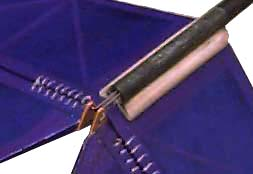
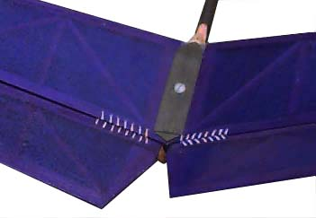

| These two pix give some idea of a simple clamp I have worked out for a removable v-tail installation. The advantages of removable surfaces are many. Easily swapped out for different sizes to optimize the control, repairs on the field take a moment or two if you have a spare set. If you don't, it will still be easier to work on a small part, rather than having the whole fuselage to hold. The surfaces can also be easily removed for transport, and will lie flat with the center hinge.
Control surface hinging is the time honored figure 8 thread method. Quick to install, light and strong, they are hard to beat. An additional advantage of the thread hinges is the extreme range of motion they permit. This allows removal of the stabs despite the z-bends. The August 1998 issue of Model Airplane News has a complete description of this technique. |
 |
|  |
For the high stresses of hand launch, the surfaces are also hinged together with a scrap of covering material or strong tape. This allows for storing the parts flat, and helps retain them in place.
The original 2-56 nylon clamping bolt and mating nylon threaded tube are not up to the task and have been stripped from aggressive launching. Fortunately, there was only incidental damage to the fuse, and it is now repaired. The bolt has been replaced with a steel capscrew and the retaining nut cast into a small blob of epoxy in the tail boom. initial trim flights indicated a slight nose heaviness so this should be just the fix. The lesson I learned, again, is don't keep flying if something doesn't look quite right. Yeah, there was plenty of warning before the failure. How many models have been lost by folks pushing for just one more flight? |
Copyright 1998-99, Thayer Syme. All rights reserved